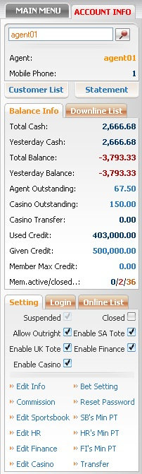
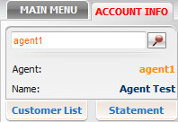

Overview
Definition:
Account Information is designed to help master to view and manage the setting of all downlines. This function is divided into 3 main sections:
- Customer Information.
- Balance Information.
- Account Setting.

Account Information
Customer Information
In this section, you can view the detailed information about yourself and all downlines which include: Name, Contact, Downlines List, Statement and Log. Refer to Customer Information guideline to understand the details.

Customer Information
Balance Information
In this section, you can view balance information about your downlines, furthermore it also supports to edit Given Credit, Member Max Credit or even make a transfer with your direct downline based on Yesterday Balance. Refer to Balance Information guideline to understand the details.

Balance Information
Account Setting
In this section, you can view and edit the setting for all downlines. Refer to Account Setting guideline to understand the details.

Account Setting